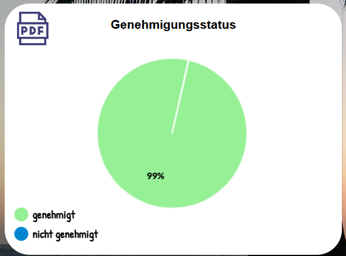
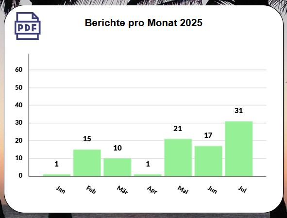
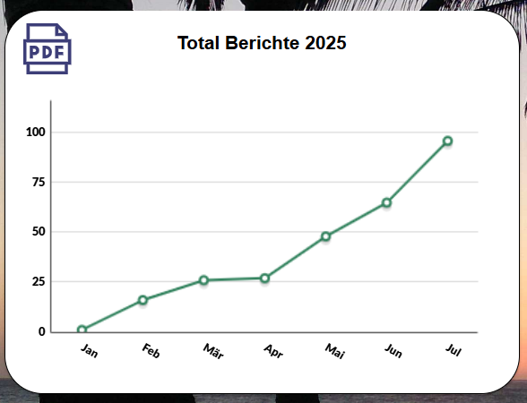
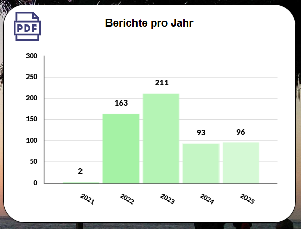
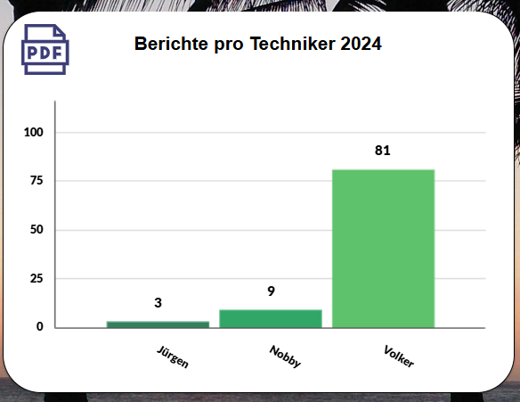

Benutzerhandbuch
pobvol Service Solution
Power App pssService Board
Stand: 9'25
Deutsch /
English
Benutzerhandbuch
pobvol Service Solution
Power App pssService Board
Stand: 9'25
Deutsch /
English
Serviceberichte dokumentieren die erfolgten Servicevorgänge (Prüfungen, Wartungen, Kontrollen, Reparaturen, etc.).
Die Berichte werden von einem Power Automate Flow erstellt, sobald diese von den Technikern angefordert werden. Der Flow benötigt dafür etwa 30 - 45 Sekunden. Über neue Berichte werden die Techniker per E-Mail informiert.
Gespeichert werden die Daten in der SharePoint-Liste (SP-Liste) "Serviceberichte". Die PDF-Dateien werden in der SharePoint-Dokumentenbibliothek des Serviceteams abgelegt.
Das Berichte-Icon
Chart: Genehmigungsstatus
Chart: Berichte pro Monat
Chart: Berichte pro Monat (kumuliert)
Chart: Berichte pro Jahr
Chart: Berichte pro Techniker
Die Berichtsübersicht
Der Servicebericht
Top ↑
Auf jedem Screen der App pssService Board finden Sie links das Berichte-Icon.
Top ↑
Der StartScreen der App pssService Board zeigt im Bereich "Serviceberichte" in einem Chart den Genehmigungsstatus an.
Ein Klick auf das Chart öffnet den Screen "Serviceberichte". Die Berichtsübersicht mit der Detailanzeige wird eingeblendet. Gelistet werden die Berichte, die noch nicht genehmigt wurden.
Top ↑
Der StartScreen der App pssService Board zeigt im Bereich "Serviceberichte" in zwei Charts die Anzahl der Berichte pro Monat für das aktuelle Jahr und das Vorjahr an.
Ein Klick auf einen Monat öffnet den Screen "Serviceberichte". Die Berichtsübersicht mit der Detailanzeige wird eingeblendet. Gelistet werden die Berichte des gewählten Monats. Die zeitliche Zuordnung erfolgt über das Vorgangsdatum, nicht über das Erstellungsdatum.
Top ↑
Der StartScreen der App pssService Board zeigt im Bereich "Serviceberichte" in zwei Charts die kumulierte Anzahl der Berichte pro Monat für das aktuelle Jahr und das Vorjahr an.
Top ↑
Der StartScreen der App pssService Board zeigt im Bereich "Serviceberichte" in einem Chart die Anzahl der Berichte pro Jahr.
Ein Klick auf ein Jahr öffnet den Screen "Serviceberichte". Die Berichtsübersicht mit der Detailanzeige wird eingeblendet. Gelistet werden die Berichte des gewählten Jahrs. Auch hier erfolgt die zeitliche Zuordnung (Jahr) über das Vorgangsdatum.
Top ↑
Der StartScreen der App pssService Board zeigt im Bereich "Serviceberichte" in zwei Charts die Anzahl der Berichte pro Techniker für das aktuelle Jahr und das Vorjahr an.
Ein Klick auf einen Monat öffnet den Screen "Serviceberichte". Die Berichtsübersicht mit der Detailanzeige wird eingeblendet. Gelistet werden die Berichte des gewählten Technikers. Auch hier erfolgt die zeitliche Zuordnung (Jahr) über das Vorgangsdatum.
Top ↑
Mit einem Klick auf einen Eintrag wird das entsprechende PDF-Dokument vom SharePoint heruntergeladen und in der Detailansicht angezeigt.
Top ↑
Serviceberichte zeigt die App pssService Board auf dem Screen "Serviceberichte" an.
Techniker nutzen die Power App pssService Board um die Serviceberichte auf dem Tablet/PC/Mac zu kontrollieren. Fehlerhafte Daten werden in der App korrigiert und ein neuer Servicebericht angefordert. Die Kontrolle wird fortgesetzt, sobald der neue Bericht vorliegt. Ist alles korrekt, wird der Bericht genehmigt. Das hilft dem Team zu erkennen, welche Berichte geprüft wurden.
Wurde von Ihrem App-Admin bei der Installation der Lösung, die nächste Prüfung für die durchgeführte Serviceart aktiviert, wird bei Genehmigung des Berichts automatisch eine eine Erinnerung für die nächste Prüfung erstellt. Das hilft dem Team bei der Einsatzplanung.
Wenn vom Kunden gewünscht, werden genehmigte Serviceberichte automatisch von einem Power Automate Flow per E-Mail an den Kunden gesendet. Ansonsten wird Ihr App-Admin per E-Mail über den Bericht informiert, damit der Bericht dem Kunden per Post zugestellt wird.